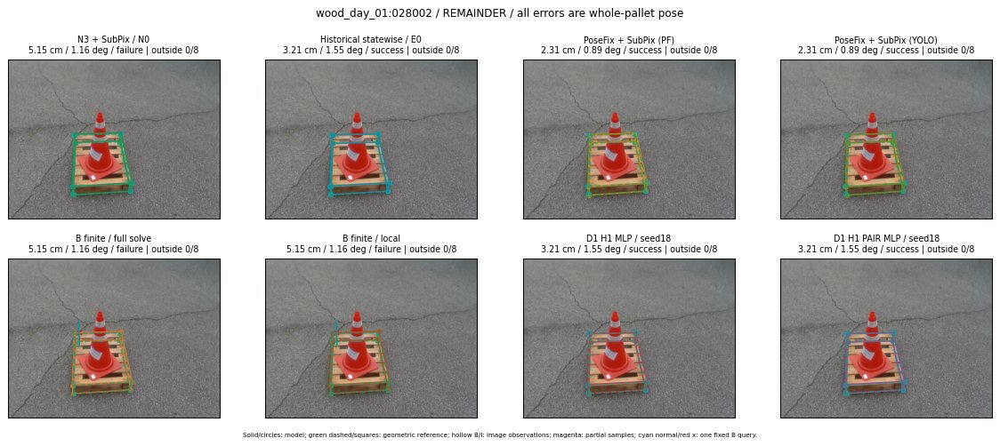

Whole-pallet pose errors; reference is a fixed geometric annotation, not certified physical GT.

Scores are uncalibrated logits. N0 retention is a numerical pose alias; it differs from H0 none or B fallback. B/I and profiles in baseline/B panels are original observations; L panels use new D1 observations. Only one deterministic supported B query is shown in a thumbnail; full support counts are below. Grey privacy rectangles edit the display copy only and are unrelated to O states; all observations were measured on original pixels. Thumbnails use JPEG quality85; detailed scientific panels are PNG.
| Method | Whole pose / cm, deg | Actual source | Selected ID | Score | Archived candidates | Eligible | N0 retained | H0 none | Fallback | Finite profiles |
|---|---|---|---|---|---|---|---|---|---|---|
| Raw YOLO + F | 4.21 cm / 1.36 deg / success | OTHER | None | N/A | N/A | N/A | False | N/A | None | N/A |
| N3 + SubPix / N0 | 5.15 cm / 1.16 deg / failure | N0 | None | N/A | N/A | N/A | True | N/A | None | N/A |
| Historical statewise / E0 | 3.21 cm / 1.55 deg / success | E0_REGENERATED | None | N/A | N/A | N/A | False | N/A | False | N/A |
| PoseFix raw | 0.74 cm / 1.09 deg / success | OTHER | None | N/A | N/A | N/A | False | N/A | None | N/A |
| PoseFix + SubPix (PF) | 2.31 cm / 0.89 deg / success | OTHER | None | N/A | N/A | N/A | False | N/A | False | historical support records 9; finite audit N/A |
| PoseFix + SubPix (YOLO) | 2.31 cm / 0.89 deg / success | OTHER | None | N/A | N/A | N/A | False | N/A | False | historical support records 9; finite audit N/A |
| Historical L, seed18 | 5.15 cm / 1.16 deg / failure | N0 | N0 | N/A | 51 | 51 | True | True | True | N/A |
| Historical B fixed bank | 2.31 cm / 0.44 deg / success | OTHER | G10/ORIGINAL_WD/sample/2 | N/A | N/A | N/A | False | N/A | False | N/A |
| Historical B full | 1.92 cm / 1.53 deg / success | OTHER | NEW/B/ORIGINAL_WD/h3/G10/SWAPPED_WD/sample/7/PROPOSED_NATIVE_YAW_3 | N/A | N/A | N/A | False | N/A | False | N/A |
| Historical edge full | 5.02 cm / 0.72 deg / failure | OTHER | NEW/edge/ORIGINAL_WD/h0/G10/ORIGINAL_WD/sample/0/PROPOSED_NATIVE_YAW_0 | N/A | N/A | N/A | False | N/A | False | N/A |
| Historical AB full | 1.91 cm / 1.54 deg / success | OTHER | NEW/AB/ORIGINAL_WD/h0/G10/ORIGINAL_WD/sample/0/PROPOSED_NATIVE_YAW_0 | N/A | N/A | N/A | False | N/A | False | N/A |
| B finite / fixed bank | 5.15 cm / 1.16 deg / failure | N0 | N0 | N/A | N/A | N/A | True | N/A | True | N/A |
| B finite / full solve | 5.15 cm / 1.16 deg / failure | N0 | N0 | N/A | N/A | N/A | True | N/A | True | N/A |
| B finite / local | 5.15 cm / 1.16 deg / failure | N0 | N0 | N/A | N/A | N/A | True | N/A | True | N/A |
| Edge finite / full solve | 5.15 cm / 1.16 deg / failure | N0 | N0 | N/A | N/A | N/A | True | N/A | True | N/A |
| D0 H0 MLP / seed18 | 5.15 cm / 1.16 deg / failure | N0 | N0 | 3.844250440597534 | 18 | 18 | True | True | True | N/A |
| D0 H0 MLP / seed19 | 5.15 cm / 1.16 deg / failure | N0 | N0 | 4.719435214996338 | 18 | 18 | True | True | True | N/A |
| D0 H0 MLP / seed20 | 5.15 cm / 1.16 deg / failure | N0 | N0 | 2.582569122314453 | 18 | 18 | True | True | True | N/A |
| D0 H1 MLP / seed18 | 3.21 cm / 1.55 deg / success | E0_REGENERATED | E0_REGENERATED | 0.02871078997850418 | 18 | 18 | False | False | False | N/A |
| D0 H1 MLP / seed19 | 3.21 cm / 1.55 deg / success | E0_REGENERATED | E0_REGENERATED | -0.5619689226150513 | 18 | 18 | False | False | False | N/A |
| D0 H1 MLP / seed20 | 3.21 cm / 1.55 deg / success | E0_REGENERATED | E0_REGENERATED | -0.7245449423789978 | 18 | 18 | False | False | False | N/A |
| D1 H0 MLP / seed18 | 5.15 cm / 1.16 deg / failure | N0 | N0 | 7.741145133972168 | 18 | 18 | True | True | True | N/A |
| D1 H0 MLP / seed19 | 5.15 cm / 1.16 deg / failure | N0 | N0 | 8.063932418823242 | 18 | 18 | True | True | True | N/A |
| D1 H0 MLP / seed20 | 5.15 cm / 1.16 deg / failure | N0 | N0 | 7.533251762390137 | 18 | 18 | True | True | True | N/A |
| D1 H1 MLP / seed18 | 3.21 cm / 1.55 deg / success | E0_REGENERATED | E0_REGENERATED | 0.6703813076019287 | 18 | 18 | False | False | False | N/A |
| D1 H1 MLP / seed19 | 3.21 cm / 1.55 deg / success | E0_REGENERATED | E0_REGENERATED | 0.699112057685852 | 18 | 18 | False | False | False | N/A |
| D1 H1 MLP / seed20 | 3.21 cm / 1.55 deg / success | E0_REGENERATED | E0_REGENERATED | 0.18427535891532898 | 18 | 18 | False | False | False | N/A |
| D1 H1 ROLE AFFINE / seed18 | 3.21 cm / 1.55 deg / success | E0_REGENERATED | E0_REGENERATED | 0.9308972358703613 | 18 | 18 | False | False | False | N/A |
| D1 H1 ROLE AFFINE / seed19 | 3.21 cm / 1.55 deg / success | E0_REGENERATED | E0_REGENERATED | 0.021051034331321716 | 18 | 18 | False | False | False | N/A |
| D1 H1 ROLE AFFINE / seed20 | 3.21 cm / 1.55 deg / success | E0_REGENERATED | E0_REGENERATED | 0.726507306098938 | 18 | 18 | False | False | False | N/A |
| D1 H1 PAIR MLP / seed18 | 3.21 cm / 1.55 deg / success | E0_REGENERATED | E0_REGENERATED | -0.528470516204834 | 18 | 2 | False | False | False | N/A |
| D1 H1 PAIR MLP / seed19 | 3.21 cm / 1.55 deg / success | E0_REGENERATED | E0_REGENERATED | -0.5320438146591187 | 18 | 2 | False | False | False | N/A |
| D1 H1 PAIR MLP / seed20 | 3.21 cm / 1.55 deg / success | E0_REGENERATED | E0_REGENERATED | -0.1774888038635254 | 18 | 2 | False | False | False | N/A |
| D1 H1 PAIR ROLE AFFINE / seed18 | 3.21 cm / 1.55 deg / success | E0_REGENERATED | E0_REGENERATED | 0.3744882643222809 | 18 | 2 | False | False | False | N/A |
| D1 H1 PAIR ROLE AFFINE / seed19 | 3.21 cm / 1.55 deg / success | E0_REGENERATED | E0_REGENERATED | 0.19542273879051208 | 18 | 2 | False | False | False | N/A |
| D1 H1 PAIR ROLE AFFINE / seed20 | 3.21 cm / 1.55 deg / success | E0_REGENERATED | E0_REGENERATED | 0.15926063060760498 | 18 | 2 | False | False | False | N/A |
| Regenerated common E0 | 3.21 cm / 1.55 deg / success | E0_REGENERATED | E0_REGENERATED | N/A | N/A | N/A | False | N/A | False | N/A |